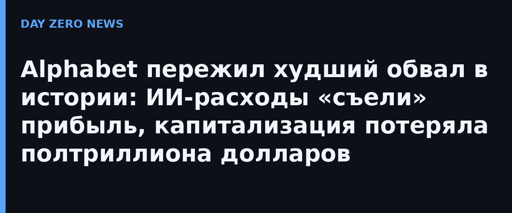

В среду вечером Alphabet опубликовала результаты третьего квартала 2026 года, и на следующий день акции обвалились примерно на 12,5% — это крупнейший однодневный обвал за всю историю компании, пишет heise online. По капитализации это порядка 500 млрд долларов, сообщает РБК. Формально квартал был сильным: выручка выросла на четверть, до 127,6 млрд долларов, операционная прибыль — на 30%. Но чистая прибыль, напротив, упала почти на четверть, до 26,2 млрд долларов, а операционный денежный поток сократился на восьмую часть, до 42,3 млрд.
Классическая картина ИИ-гонки: капитал уходит в дата-центры быстрее, чем возвращается. Капитальные расходы за 92 дня составили 51,3 млрд долларов — более чем вдвое больше, чем годом ранее, и на 9 млрд больше операционного денежного потока. Свободный денежный поток оказался отрицательным второй квартал подряд (минус 9,07 млрд против ожидавшихся минус 2,7 млрд, по подсчётам профинансистов). Для финансирования ИИ Alphabet за квартал заняла 29 млрд новых долгов и выпустила акции на 12,4 млрд — после 40 млрд, привлечённых аналогичным способом в июне. Процентные расходы вырос почти в семь раз за год.
Тревогу усилило и ядро бизнеса: выручка поисковой рекламы выросла «всего» на 12%, до 63,35 млрд, — ниже ожиданий аналитиков. На фоне этого бумаги Microsoft в тот же день росли почти на 4%: инвесторы решили, что ИИ-расходы Google перестали сходиться с его же денежными потоками. Сам факт реакции важнее цифр: это первый случай, когда рынок наказал самого крупного бенефициара ИИ-бума именно за масштаб ИИ-инвестиций. Индексная «проверка на прочность» затрагивает всю отрасль — от поставщиков чипов до облачных платформ, чьи оценки держатся на обещаниях будущего дохода от ИИ.
Руководство не собирается сбавлять темп: в четвёртом квартале расходы на ИИ-ЦОД обещают ещё больше, а новые допвыпуски акций должны принести ещё 27,6 млрд долларов. Чем ниже курс, тем больше акций придётся печатать, и тем сильнее размытие долей — порочный круг, который аналитики уже называют стресс-тестом всей модели финансирования ИИ. Если цикл повторится, вопросов «а когда же отдача от ИИ» в этом секторе станет заметно больше.